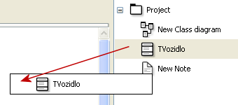
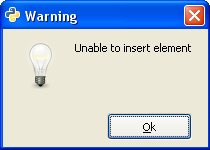

Skrývanie prvkov
Môže sa vám stať, že vo Vaších projektoch budete potrebovať
zjednodušený a detailný diagram (prípadne viac diagramov) tých istých objektov.
Ak máme v diagrame prvok, ktorý chceme skryť, označíme ho a stračíme klávesu "Delete".
Vidíme, že prvok zmizol z diagramu (aj so súvisiacimi vzťahmi), no ostal v strome projektu.
Pridávanie existujúcich prvkov
Ak chceme nejaký prvok (resp. prvky) použiť vo viacerých diagramoch,
možeme postupovať dvojako:
- V diagrame, v ktorom sa prvok už nachádza ho označíme a skopírujeme ("Ctrl+C").
Otvoríme diagram, do ktorého chceme prvok vložiť a pridáme ho ("Ctrl+V").
- Prvok nájdeme v strome projektu ťahaním ho vložíme do diagramu (Drag and Drop).
Poznámka:
Týmito spôsobmi sa dajú pridávať ľubovolné prvky ale len do diagramov,
s ktorými sú kompatibilné (napr. trieda len do diagramu tried) a v ktorých sa ešte nenachádzajú.


Zmazanie prvkov
Ak nejaký prvok už nepotrebujeme a chceme ho zmazať z celého projektu,
tak ho môžeme odstrániť viacerými spôsobmi:
- Označíme ho v diagrame a stlačíme klávesovú skratku "Shift+Delete"
- Označíme ho v diagrame a v hlavnom menu zvolíme "Upraviť"⇨"Odstrániť"
- Nájdeme prvok v strome projektu v kontextovom menu zvolíme možnosť "Odstrániť".